文字
背景
行間


2019年8月の記事一覧
令和元年度カヌー新人大会
本日8月24日は令和元年度千葉県高等学校新人カヌー大会令和元年度関東高等学校選抜カヌー大会千葉県予選会が香取市黒部川カヌー場で行われました。大会で選考された選手は9月21日、22日に精進湖で行われる関東大会に出場します。レースコンディションとしては、風の影響で波が強く唯でさえ緊張していた初めての公式戦参加の1年生選手には思ったとおりにレース展開ができなかったかもしれません。逆に、主力となった2年生の選手の成長がすばらしく頼もしく見えました。選手の皆さんお疲れ様でした。すべての選手が今回のレースで得た課題を次の試合に向けて明日からの練習で修正していってもらえると思います。
今回も香取市水上スポーツ指導員の皆様にはいつも以上にお世話になりました。本当にありがとうございました。また、保護者の皆様にはいつも応援ありがとうございます。
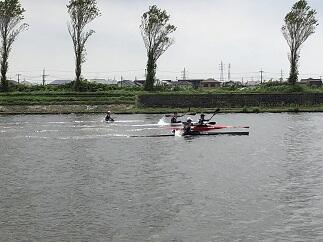


 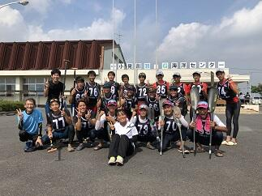
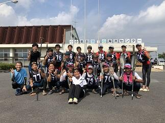
今回も香取市水上スポーツ指導員の皆様にはいつも以上にお世話になりました。本当にありがとうございました。また、保護者の皆様にはいつも応援ありがとうございます。
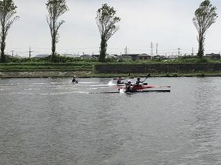
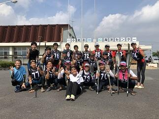 千葉県吹奏楽コンクール2019本選大会
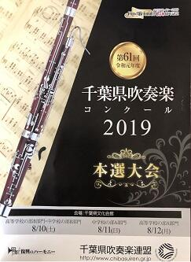本日８月12日（月）第61回令和元年度千葉県吹奏楽コンクール2019本選大会（高等学校のA部門）が千葉県文化会館を会場に行われました。東関東大会への推薦校が決定される大会です。さすがに予選会を優秀な成績で通過した団体ばかりで、課題曲・自由曲どれもが団体の個性が出ていてどこも素晴らしく感動的な演奏ばかりでした。佐倉高校は演奏順番が1番でプレッシャーがかかるなか、日頃の成果を十分に発揮できたと思います。特に各楽器の個性が曲調のなかで曲の表現とともに十分に引き出された演奏が行われたと思います。素晴らしい演奏をありがとうございました。
復活‼美しい東郷池
 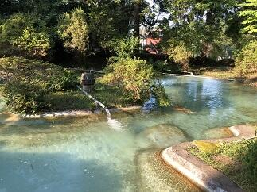
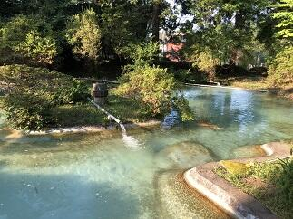

 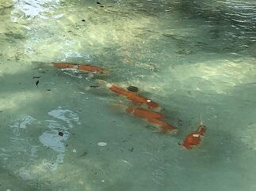先日お伝えした東郷池クリーンアップ作戦が功を奏して、鯉や鮒やメダカが泳ぐ姿が美しく映える東郷池が復活しました。とにかくうれしいかぎりです。まずはご覧ください。(上の写真は早朝の東郷池の風景です)
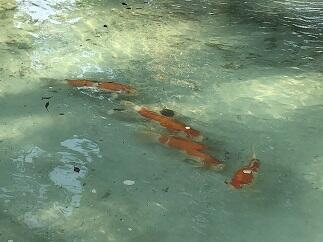先日お伝えした東郷池クリーンアップ作戦が功を奏して、鯉や鮒やメダカが泳ぐ姿が美しく映える東郷池が復活しました。とにかくうれしいかぎりです。まずはご覧ください。(上の写真は早朝の東郷池の風景です) 


 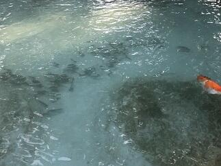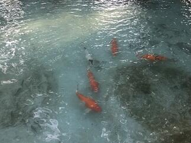池の中の鯉たちは新しい東郷池の環境に慣れてきたようで、ひと安心です。（夕方の東郷池の風景です）
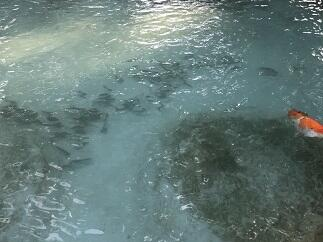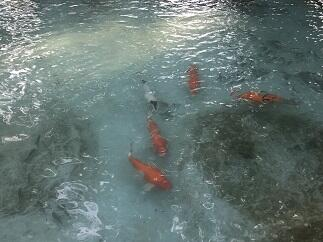池の中の鯉たちは新しい東郷池の環境に慣れてきたようで、ひと安心です。（夕方の東郷池の風景です） 東郷池の水全部抜く！
 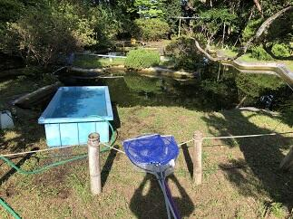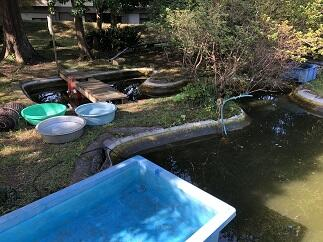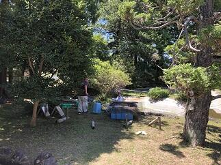
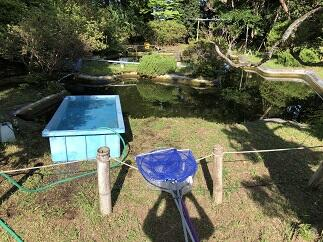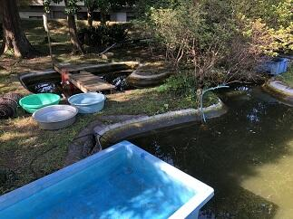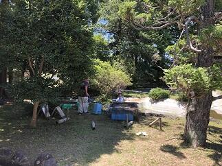


 東郷池のきれいな水の中を鯉がゆうゆうと泳ぐ姿を見たいということで、昨年からいろいろな手段を使って東郷池クリーンアップ作戦を行って参りましたが、残念ながら緑に濁った池の水を変えることができませんでした。ということで、とりあえずまず池の水を全部抜いて池を掃除して新しい水に入れ替えてみようということで今日、東郷池の水全部抜いてみました。朝6時から夕方の6時まで12時間かかりましたが掃除ができました。
東郷池のきれいな水の中を鯉がゆうゆうと泳ぐ姿を見たいということで、昨年からいろいろな手段を使って東郷池クリーンアップ作戦を行って参りましたが、残念ながら緑に濁った池の水を変えることができませんでした。ということで、とりあえずまず池の水を全部抜いて池を掃除して新しい水に入れ替えてみようということで今日、東郷池の水全部抜いてみました。朝6時から夕方の6時まで12時間かかりましたが掃除ができました。古川さん、友信さん、高木事務長さんありあがとうございました。掃除してわかったのは、思いのほか綺麗になりとってもうれしかったです。なお、池にいる鯉、鮒、メダカには池の準備ができるまで用意した水槽に移住してもらいました。
令和元年度全国総合体育大会カヌー競技大会第2日
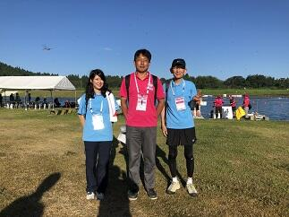
 本日8月４日は令和元年度全国高等学校総合体育大会カヌー競技大会の500ｍの第2日目の競技が鹿児島県伊佐市菱刈カヌー競技場で行われます。第２日目は各種目の決勝が行われます。生徒は早朝から会場入りしアップを行って、8:00からのレースに臨みます。天気予報では本日も天気は腫れで暑くなりそうです。良いレースができることを期待します。(会場にはトンボがすごくいっぱい飛んでいました。)
本日8月４日は令和元年度全国高等学校総合体育大会カヌー競技大会の500ｍの第2日目の競技が鹿児島県伊佐市菱刈カヌー競技場で行われます。第２日目は各種目の決勝が行われます。生徒は早朝から会場入りしアップを行って、8:00からのレースに臨みます。天気予報では本日も天気は腫れで暑くなりそうです。良いレースができることを期待します。(会場にはトンボがすごくいっぱい飛んでいました。)
本日8月４日は令和元年度全国高等学校総合体育大会カヌー競技大会の500ｍの第2日目の競技が鹿児島県伊佐市菱刈カヌー競技場で行われます。第２日目は各種目の決勝が行われます。生徒は早朝から会場入りしアップを行って、8:00からのレースに臨みます。天気予報では本日も天気は腫れで暑くなりそうです。良いレースができることを期待します。(会場にはトンボがすごくいっぱい飛んでいました。)  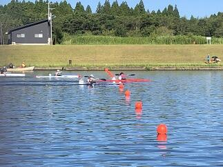
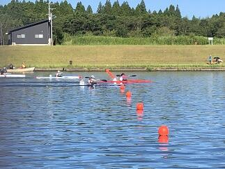

 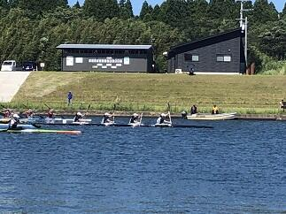台風8号の接近が予想されているため、明日５日、明後日６日に予定されていた200ｍ競技については中止になりました。大変残念ですが今年度の総体のカヌー競技スプリントの部は今日の500ｍ決勝で終わりとなりました。気力の充実した実力伯仲の選手たちが繰り広げた決勝は、最後の最後の一漕ぎまで結果がわからない手に汗にぎるレースばかりでした。選手の皆さん本当にお疲れ様でした。そして最後まで感動をありがとうございました。
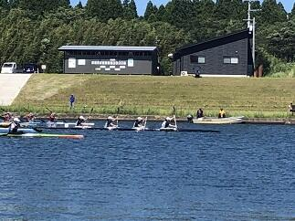台風8号の接近が予想されているため、明日５日、明後日６日に予定されていた200ｍ競技については中止になりました。大変残念ですが今年度の総体のカヌー競技スプリントの部は今日の500ｍ決勝で終わりとなりました。気力の充実した実力伯仲の選手たちが繰り広げた決勝は、最後の最後の一漕ぎまで結果がわからない手に汗にぎるレースばかりでした。選手の皆さん本当にお疲れ様でした。そして最後まで感動をありがとうございました。さて、千葉県選手団の結果ですが、本校から決勝に進出したC4では入賞はできませんでしたが、素晴らしいスタートを切れたレースでした。小見川高校が出場した男子K1は6位、女子K1は1位、K2は2位、K4は1位と昨年に続く素晴らしい結果でした。おめでとうございます。最後まで、応援してくださったOBや選手のご家族の皆さんありがとうございました。選手は最高の舞台で多くの刺激を受けるとともに多くのことを学ぶことができたと思います。そして、また一段と成長することができたと思います。これからもここまで努力してきた経験を多くの場面で生かしていってください。
令和元年度全国総合体育大会カヌー競技大会第１日


 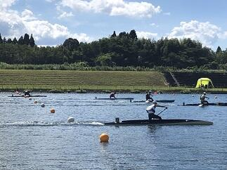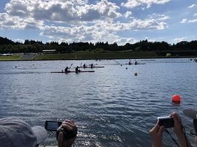
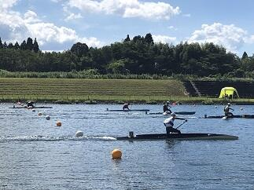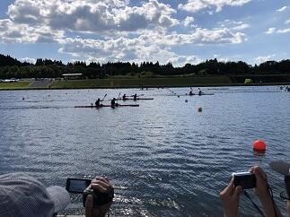 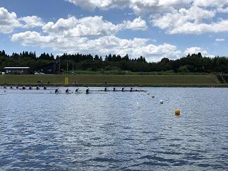
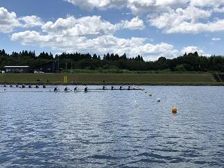
 本日8月3日は令和元年度全国高等学校総合体育大会カヌー競技大会の500ｍ競技の第１日目が鹿児島県伊佐市菱刈カヌー競技場で行われました。本日は、すべての種目の予選と準決勝が行われました。本校からは、男子のK４、C４、K２、C２、C1の5種目に出場しました。猛暑の中、全国から集まった選手たちは最後の最後まで持てる力を十分に発揮して素晴らしいレースを繰り広げていました。選手の皆さん、お疲れ様でした。それと共に感動をありがとうございました。本校からはC4で明日の決勝に進出することができました。千葉県選手団としては、小見川高校から女子K４、K2、K1、男子K1で明日の決勝に進出しました。おめでとうございます。明日の決勝もここまで共に頑張ってきた仲間と自分を信じてレースを楽しんで欲しいと思います。あわせて、カヌー部OBや選手のご家族の皆さん、応援いつもありがとうございます。明日も応援よろしくお願いします。
本日8月3日は令和元年度全国高等学校総合体育大会カヌー競技大会の500ｍ競技の第１日目が鹿児島県伊佐市菱刈カヌー競技場で行われました。本日は、すべての種目の予選と準決勝が行われました。本校からは、男子のK４、C４、K２、C２、C1の5種目に出場しました。猛暑の中、全国から集まった選手たちは最後の最後まで持てる力を十分に発揮して素晴らしいレースを繰り広げていました。選手の皆さん、お疲れ様でした。それと共に感動をありがとうございました。本校からはC4で明日の決勝に進出することができました。千葉県選手団としては、小見川高校から女子K４、K2、K1、男子K1で明日の決勝に進出しました。おめでとうございます。明日の決勝もここまで共に頑張ってきた仲間と自分を信じてレースを楽しんで欲しいと思います。あわせて、カヌー部OBや選手のご家族の皆さん、応援いつもありがとうございます。明日も応援よろしくお願いします。